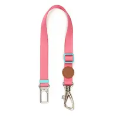

Adaptador de Cinto de Segurança

Especificações do Produto
- Preço
- R$ 129,90
- Marca
- Toh Fiji
- Indicado para
- Cães e gatos
- Descrição
- Acessório que conecta a coleira ou peitoral do pet ao cinto de segurança do carro, garantindo mais proteção durante viagens.